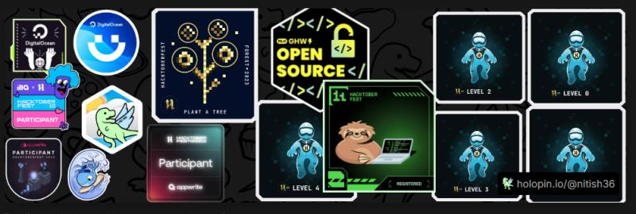
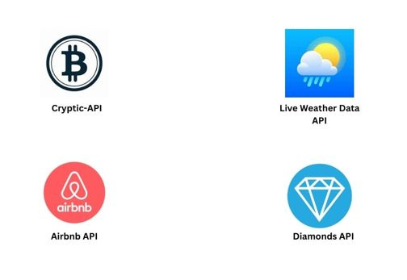

Nitish K
Smartsheet Core Product Certified || Data Analyst-Operations || Python, SQL, ETL Pipelines, Prefect || Transforming complex data into actionable insights through advanced analysis || Data Integration with Python and Smartsheet ||
01
Years
Experience
8
Projects
Completed
02
Companies
Worked
02
Blogs
About Me
Who am II'm a Data Analyst-Operations at Design Cafe.
- I am a passionate and driven data professional with a Bachelor of Engineering in Computer Science and 1 year 2 months of hands-on experience in data analytics, data engineering, and operations. Currently, I am actively seeking opportunities in Data Analytics, Data Operations, Product Analysis, and Data Engineering roles.
- My expertise lies in transforming raw data into actionable insights using Python, SQL, Prefect and Power BI, creating meaningful visualizations and dashboards that empower data-driven decision-making.
- I've also led projects involving data scraping and API integration, developing automated pipelines with Selenium and Prefect, and visualizing results using Google Looker Studio. In addition, I’ve published multiple APIs on RapidAPI and created interactive dashboards for weather and Airbnb projects.
Technologies I've been working with:
Languages
- Python
- SQL
- Java
- HTML
- CSS
- GIT
Databases
- Smartsheet
- Google Sheets
- Microsoft Excel
- MYSQL
- MongoDB
ETL Tools
- Prefect
- SSIS
Visualization Tools
- Power BI
- Looker Studio
- Tableau
Developer Tools
- Visual Studio
- Sublime Text
- Pycharm
Libraries
- Pandas
- Numpy
- Matplotlib
- Beautiful Soup
Qualification
Experience & EducationProfessional Experience
Data Analyst-Operations
Company: DesignCafe
Bangalore,Karnataka
- Developed an automated email allocation system using Python scripts and GitHub Actions to streamline project communication and improve accuracy.
- Monitored and maintained a tracking system for customer projects, ensuring accurate and timely handovers.
- Performed in-depth data analysis, developing key performance metrics and building dashboards to provide actionable business insights.
- Designed user-friendly data architectures and implemented efficient workflows for seamless data handling and storage, improving operational efficiency.
- Gained hands-on experience with Smartsheet, learning to manage and track projects efficiently using the platform's advanced features.
Nov 2023 - Present
Data Engineering Intern
Company: Nineleaps Technology Solutions Private Limited
Bangalore,Karnataka
- Designed and implemented efficient ETL pipelines on live data streams using Apache Airflow, ensuring automated, real-time data ingestion and transformation.
- Applied advanced data analytics techniques on complex datasets, transforming raw data into meaningful insights, and visualized findings using Tableau dashboards for clear, actionable results.
- Designed and implemented efficient ETL pipelines on live data streams using Apache Airflow, ensuring automated, real-time data ingestion and transformation.
February 2023 – October 2023
Education
Bachelor of Engineering in Computer Science
RNS INSTITUTE OF TECHNOLOGY
Bangalore,Karnataka
Aug. 2019 – May 2023
Services
What I doSmartsheet
Analytics
- Integrate Smartsheet with Python and Github Actions to perform effective allocations of various teams involved in projects .
- Using Smartsheet I can create tailored project tracking dashboards that provide valuable insights by visualizing KPIs, optimizing processes, and enabling data-driven decision-making with real-time updates .
- I design custom automated workflows to streamline project management, integrate seamlessly with existing systems, and automate recurring tasks, saving time and reducing errors.
- I create meaningful metrics for dashboards, including milestone tracking, resource utilization, and risk analysis, to ensure projects stay on schedule and address potential challenges effectively.
Data
Analytics
- Data Collection & Integration: Experienced in web scraping to extract structured and unstructured data from websites, transferring it to databases like MongoDB or MySQL for analysis, and automating data pipelines using Python with tools like Selenium, BeautifulSoup, and Scrapy.
- Data Cleaning & Transformation: Proficient in cleaning raw data using Python libraries like Pandas and NumPy, transforming and preprocessing datasets for analysis or visualization, and ensuring data integrity and accuracy for actionable insights.
- Visualization & Reporting: Experienced in designing interactive dashboards with Tableau, Power BI, and Matplotlib/Seaborn in Python, effectively communicating insights through data storytelling and tailored visualizations, and generating reports in formats like PDF, Excel, or live dashboards.
- Automation & Optimization: Proficient in automating routine data analytics tasks with Python scripting and Prefect workflows, creating reusable pipelines for data collection, analysis, and visualization, and optimizing database queries and scripts for enhanced processing speed.
Power BI
Services
- Data Integration: Expertise in connecting Power BI to various data sources, including MySQL, MongoDB, and CSV files, to ensure seamless data import and integration.
- Data Analysis & Modeling: Skilled in transforming raw data into meaningful insights by performing advanced analysis and creating robust data models within Power BI.
- Visualization & Reporting: Proficient in designing interactive dashboards and reports tailored to stakeholder needs, enabling effective decision-making through clear and actionable visualizations.
Projects

Live Weather ETL Dashboard
Tech Stack: Python,Prefect,Selenium, BeautifulSoup, MySQL,Google Sheets,PowerBI
- Orchestrated end-to-end data pipeline utilizing Python, Selenium, and Beautiful Soup for scraping to gather real-time weather data, from microsoft news.
- Maintained MySQL database to efficiently store and manage the weather data, ensuring data integrity and accessibility for downstream analytics.
- Developed interactive visualizations in Power BI, integrating real-time updates from Google Sheets, to provide actionable insights into weather patterns and trends derived from the scraped data.
Github Link: @Github

Brazilian Customer Analysis
Tech Stack: Python,Pyspark, Pandas
- I conducted a comprehensive Brazilian customer analysis, utilizing datasets such as customer information, order details, shipping freight, and order data.
- To analyze this data, I employed powerful data processing tools such as PySpark and Pandas.
- Leveraging the capabilities of these libraries, I performed various analyses on the datasets, extracting valuable insights and uncovering meaningful patterns.
- Through data manipulation, aggregation, and statistical calculations, I gained a deep understanding of customer behavior, order trends, and shipping patterns.
- This analysis provided valuable insights that can inform strategic decision-making, optimize business processes, and enhance customer satisfaction in the Brazilian market
Github Link: @Github

Coffee Market Insights Automation
Tech Stack: Python, Google Sheets, Looker Studio, Github Actions, Smartsheet
- Web Scraping & Data Pipeline: Collected real-time coffee data from multiple websites through web scraping and structured it into Google Sheets. Automated data flow from Google Sheets to Smartsheet using Data Shuttle for seamless integration and analysis.
- GitHub Actions & Reporting: Developed GitHub Actions to automate data processing and ensure up-to-date insights. Designed interactive dashboards in Power BI and Looker Studio to analyze key metrics such as tag popularity, vendor performance, and revenue trends
- Insights & Automation: Created a dynamic, automated weekly report that tracks changes in coffee tag popularity and revenue-driving products. Implemented conditional formatting to highlight high-performing and underperforming tags, enabling data-driven decision-making.
Github Link: @Github
Dashboard Link: @Github
Blogs/Articles
Automating Email Allocation Using
Python ETL Pipeline
In the realm of project management, timely communication is crucial, especially when it comes to milestone tracking.
This blog discusses an ETL pipeline created using Python and GitHub Actions, designed to generate email allocations
for six different milestones based on the dates when each milestone is punched. Various criteria are considered to ensure
accurate email generation.
Read More >>
Live Weather Data Extraction
Using Prefect as ETL
Live Weather and data are used by people in many ways to generate insights, predict upcoming weather, to fleet management and various other applications.
There are various parameters which are considered such as pressure, dew point, humidity, rain days, snow days, temperature, time, date when it was recorded, uv index, uv status, air quality, and the feedback such as driving conditions, outdoors, type of clothing etc.,
In this article, I’m going to show how you can quickly and easily load weather forecast data for any location within India and to load the data into SQL database using ETL tools and at the same display it on the dashboard for further analysis.
Read More >>
Achievements/Certification
AchievementsAchievements
- Made 4 valid PR contributions on github repositories during the Hacktoberfest and won digital badges
- 
- Created and published 4 APIs on RapidAPI.com using FastAPI
- 
- Star Performer in JAS-24 and JFM-25 Quarter of DesignCafe for creating autoallocation of CT/CS as well as developing quality smartsheet related architectures for the stakeholders.